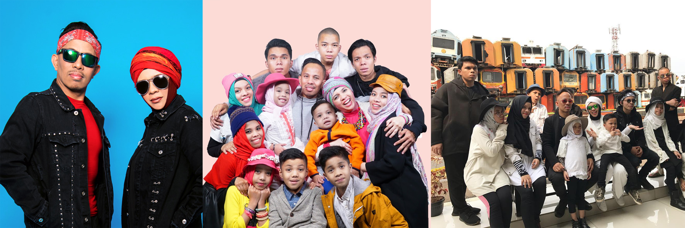

Sebuah keluarga besar dengan sebelas anak dari pasangan Lenggogeni Faruk (Gen) dan Halilintar Asmid (Halilintar) dikenal dengan nama Gen Halilintar. Mulai dikenal luas oleh masyarakat setelah diterbitkan buku Kesebelasan Gen Halilintar My Family My Team, yang menceritakan keseharian ala Gen Halilintar, yang penuh dengan keunikan Kini Gen Halilintar dikenal sebagai Family Youtuber dengan kanal utama Gen halilintar dan kanal untuk masing-masing anggota keluarga. Kekompakan, kemandirian dan kreativitas yang ditunjukkan dalam setiap konten, menjadikan gen halilintar digemari oleh masyarakat Indonesia hingga luar negeri.
